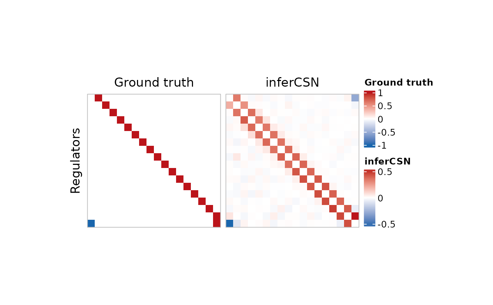
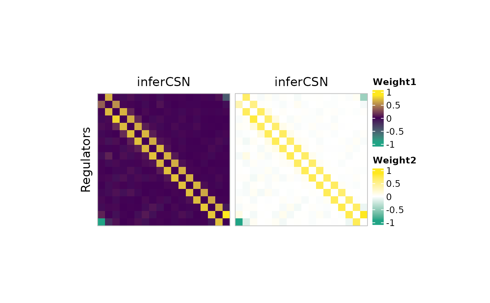
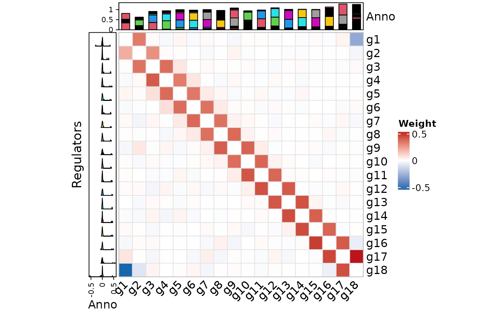

Plot network heatmap
Usage
plot_network_heatmap(
network_table,
regulators = NULL,
targets = NULL,
switch_matrix = TRUE,
show_names = FALSE,
heatmap_size_lock = TRUE,
heatmap_size = 5,
heatmap_height = NULL,
heatmap_width = NULL,
heatmap_title = NULL,
heatmap_color = c("#1966ad", "white", "#bb141a"),
border_color = "gray",
rect_color = NA,
anno_width = 1,
anno_height = 1,
row_anno_type = c("boxplot", "barplot", "histogram", "density", "lines", "points",
"horizon"),
column_anno_type = c("boxplot", "barplot", "histogram", "density", "lines", "points"),
legend_name = "Weight",
row_title = "Regulators"
)Arguments
- network_table
The weight data table of network.
- regulators
Regulators list.
- targets
Targets list.
- switch_matrix
Logical value, default is
TRUE, whether to weight data table to matrix.- show_names
Logical value, default is
FALSE, whether to show names of row and column.- heatmap_size_lock
Lock the size of heatmap.
- heatmap_size
Default is
5. The size of heatmap.- heatmap_height
The height of heatmap.
- heatmap_width
The width of heatmap.
- heatmap_title
The title of heatmap.
- heatmap_color
Colors of heatmap.
- border_color
Default is
gray. Color of heatmap border.- rect_color
Default is
NA. Color of heatmap rect.- anno_width
Width of annotation.
- anno_height
Height of annotation.
- row_anno_type
Default is
boxplot, could add a annotation plot to row, choose one ofboxplot,barplot,histogram,density,lines,points, andhorizon.- column_anno_type
Default is
boxplot, could add a annotation plot to column, choose one ofboxplot,barplot,histogram,density,lines, andpoints.- legend_name
The name of legend.
- row_title
The title of row.
Examples
data("example_matrix")
data("example_ground_truth")
network_table <- inferCSN(example_matrix)
#> ℹ [2025-09-07 13:59:35] Running for <dense matrix>.
#> ℹ [2025-09-07 13:59:35] Checking input parameters.
#> ℹ [2025-09-07 13:59:35] Using L0 sparse regression model.
#> ℹ [2025-09-07 13:59:35] Using 1 core
#> ℹ [2025-09-07 13:59:35] Building results
#> ✔ [2025-09-07 13:59:35] Run done.
p1 <- plot_network_heatmap(
example_ground_truth[, 1:3],
heatmap_title = "Ground truth",
legend_name = "Ground truth"
)
p2 <- plot_network_heatmap(
network_table,
heatmap_title = "inferCSN",
legend_name = "inferCSN"
)
ComplexHeatmap::draw(p1 + p2)

if (FALSE) { # \dontrun{
p3 <- plot_network_heatmap(
network_table,
legend_name = "Weight1",
heatmap_color = c("#20a485", "#410054", "#fee81f")
)
p4 <- plot_network_heatmap(
network_table,
legend_name = "Weight2",
heatmap_color = c("#20a485", "white", "#fee81f")
)
ComplexHeatmap::draw(p3 + p4)
} # }
plot_network_heatmap(
network_table,
show_names = TRUE,
rect_color = "gray90",
row_anno_type = "density",
column_anno_type = "barplot"
)

plot_network_heatmap(
network_table,
regulators = c("g1", "g3", "g5"),
targets = c("g3", "g6", "g9"),
show_names = TRUE
)

if (FALSE) { # \dontrun{
plot_network_heatmap(
network_table,
regulators = c("g1", "g2"),
show_names = TRUE
)
plot_network_heatmap(
network_table,
targets = c("g1", "g2"),
row_anno_type = "boxplot",
column_anno_type = "histogram",
show_names = TRUE
)
} # }